戊辰日
四九第四天
 孝亲
孝亲残冬｜节气｜ 大寒 ｜时间｜ 一月二十日至二月三日
今年大寒需特别注意的健康问题：发热、心血管病、脑卒中、消化道出血、头晕、血压高
主料：糯米、粳米、赤小豆、豌豆、黍米、小米、茯苓、紫苏子。
配料：莲子、板栗、核桃、银耳、红枣、桂圆肉、枸杞、樱桃干、桑椹干。
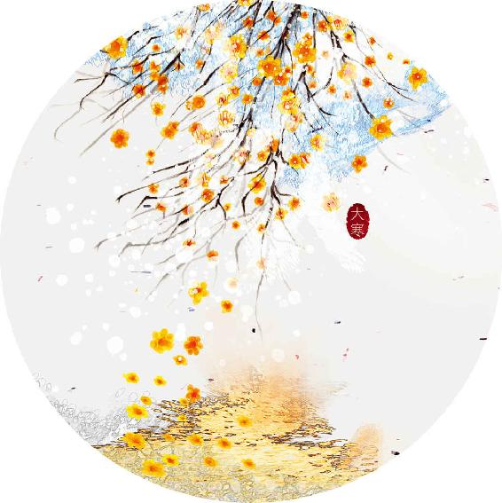
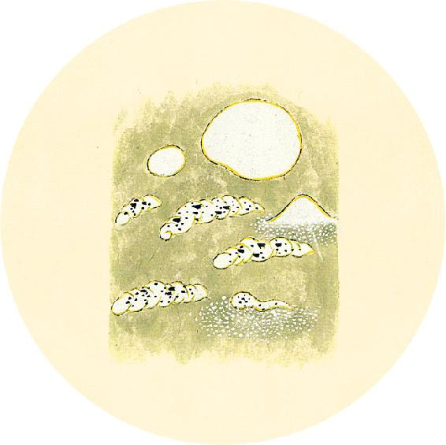
节日食方
今年腊八节正值大寒节气，大寒节气消寒糯米饭用到的赤小豆、糯米等原料，也正是腊八粥的基础原料。
可用今年腊八粥推荐配方（见1月13日）代替往年吃的消寒糯米饭，作为大寒节气食方。
现在是适合泡腊八蒜的时节（做法见1月21日），泡好后，新年就可以吃了。
多食咸，则脉凝泣（sè，“泣”字为“涩”字的误写）而变色。
——黄帝内经·素问·五脏生成论
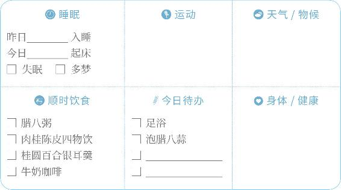
孝亲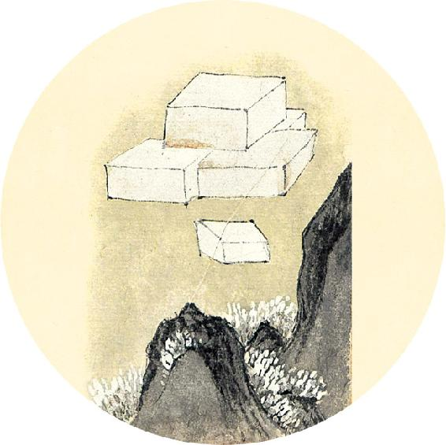
节日食方
腊八蒜
材料：大蒜、米醋、红糖、广口玻璃瓶。
做法：
1. 大蒜瓣剥去皮，用软布擦干净，不能沾水，放进干净的广口瓶中，装到大约2/3的高度，倒入米醋、红糖，盖好盖子。
2. 泡20天，等蒜瓣都变成碧绿的颜色，就可以随取随吃了。
3. 泡过蒜的醋，用来做拌菜的调味汁，或是蘸饺子吃，味道都很不错。
【释义】吃多了咸味的东西，会使血脉凝滞不通，面色发生变化。
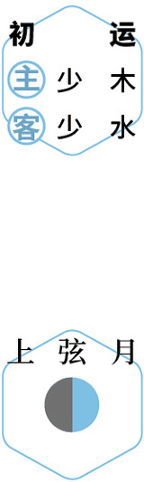
浴足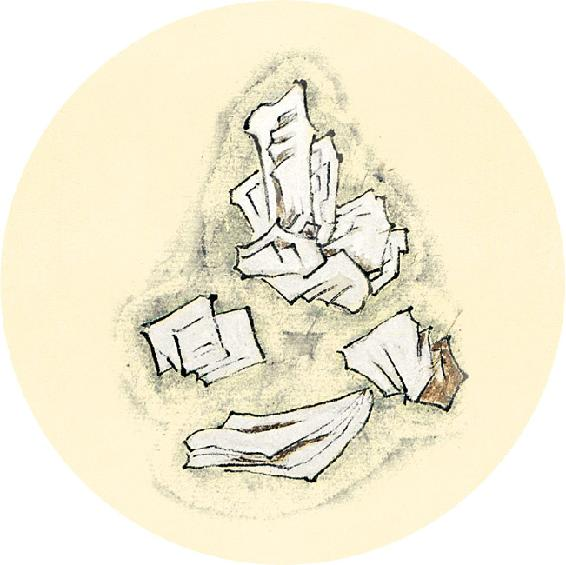
二十四节气茶养生
今年大寒节气品茶推荐：咖啡。
大寒时节，人体下半身易有寒湿。喜欢喝提神茶饮的人，可以喝咖啡。
咖啡和黑茶一样，可以利水消脂，对脾胃比较好。
咖啡也是消食健胃的饮品，能帮助清除冬季脾胃的积滞。
喝咖啡可以加牛奶，有助于保护胃。怕苦的人可以再加些红糖调味。
多食苦，则皮槁而毛拔。
——黄帝内经·素问·五脏生成论
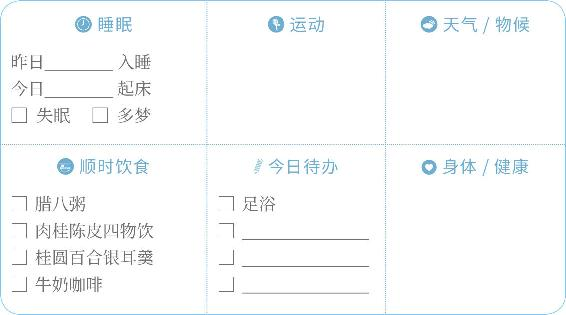
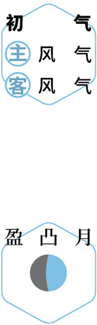
赏味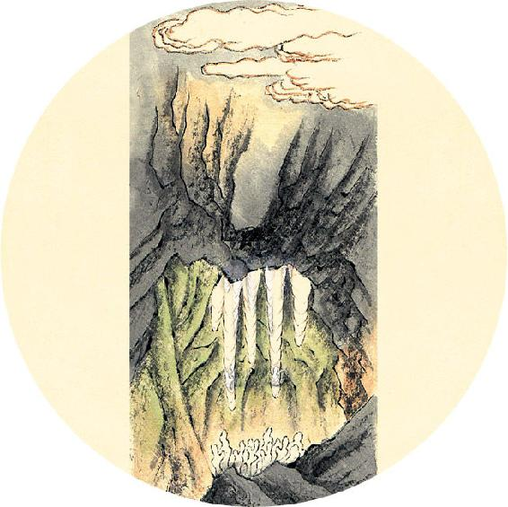
健康提示
大寒节气的养生功课：固肾、暖脾，增强肝脏排毒功能，为春天做准备。
今年大寒特殊的养生要点——
今年大寒节气，人体容易内湿外燥。痰湿重的人要重点防病。
保养重点：心、肝、生殖系统。
容易出现的问题：发热、心血管病、脑卒中、消化道出血、头晕、血压高。
【释义】吃多了苦味的东西，会使皮肤干燥而毫毛脱落。

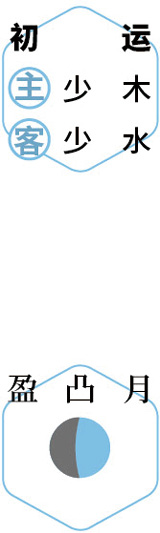
祛湿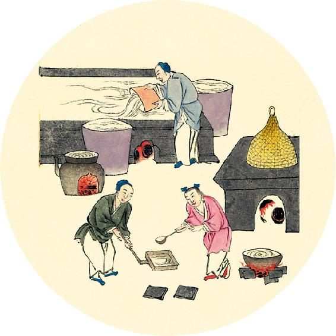
一候反思
过去两个月是否发生过以下情况？
脸肿、下眼睑肿 □ 是 □ 否
扁桃体发炎 □ 是 □ 否
咳嗽 □ 是 □ 否
皮肤病 □ 是 □ 否
以上任意一个回答“是”，今年3月到6月要特别注意预防传染病，每天的顺时饮食不要间断，对适合自己体质的可以酌情加量食用，调理好身体内环境，提高抵抗力。
多食辛，则筋急而爪枯。
——黄帝内经·素问·五脏生成论
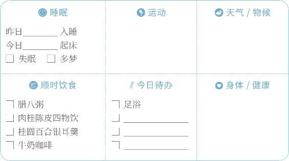
反思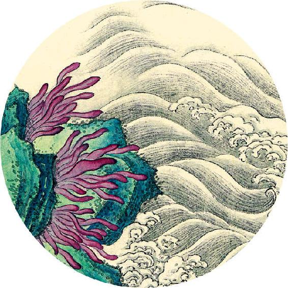
健康提示
深冬、初春是脑卒中（脑梗死、脑出血）发病的危险期。大寒节气这半个月，是一年中脑梗死发病最多的时期。
饮食不节、熬夜、情绪激动都可能诱发脑梗死。
三高、心血管病人群和老年人更要重视，切忌暴饮暴食、通宵玩乐、情绪激动。
刮风、寒冷天气出门注意戴好帽子，保护头部。
日常保健：可以在枕芯里放入陈皮、白芷、菊花等芳香开窍、化瘀通络的中药枕着睡觉。
其他调理方法参见1月11日和10月29日。
【释义】吃多了辛味的东西，会使筋拘挛而爪甲干枯。
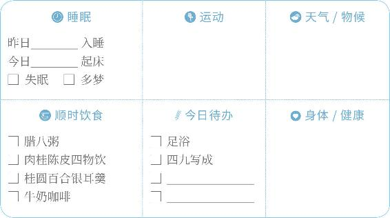
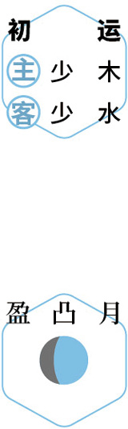
防风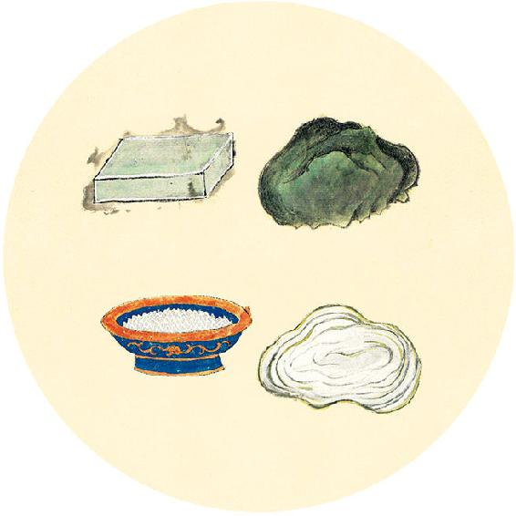
采购年货
过年期间本地市场买不到的材料，可在快递服务放假前提前网购。
1.中药香包（聚会时可佩戴，防感染）。
2. 解酒消食的千杯不醉茶：川陈枳椇四物饮（配方见5月18日）。
3.小年：糖瓜（麦芽糖）。
4. 立春：鱼腥草、陈皮，及荠菜、葱、桑叶等各种辛味蔬菜。
5. 雨水：绿豆（用于发绿豆芽，做法见2月8日）、韭菜、陈皮、竹茹。
6. 元宵节：糯米、大米、花生、橘皮糖或红糖、椰子油。
7. 辛丑岁全年保健粥：荷叶、陈皮、枸杞、莲子、茯苓、粥料（可参考1月13日腊八粥基础配方）。
多食酸，则肉胝（zhì）（zhù）而唇揭。
——黄帝内经·素问·五脏生成论
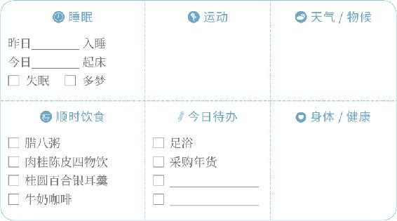
办年货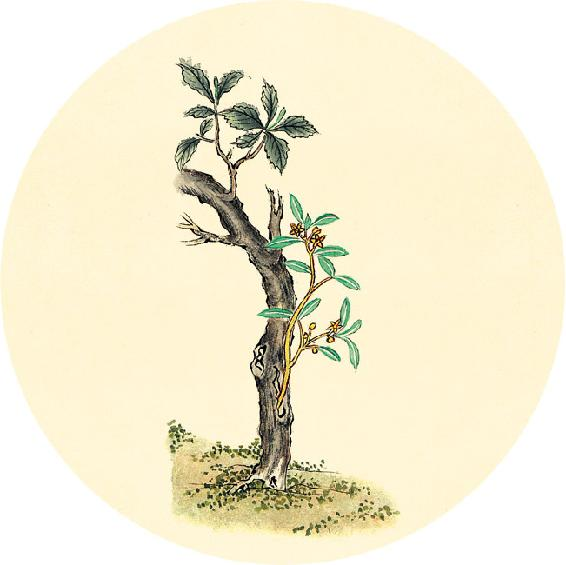
健康提示
虽然还有半个月才到大年初一，但是根据《黄帝内经》，今年的岁运是从大寒节气当天更替。
因此，庚子岁的岁运（“金”）已结束，辛丑岁的岁运（“水”）已开始，我们由“燥金之年”进入了“寒水之年”。
根据古人的观察总结，辛丑岁这个“水年”与其他的“水年”有一定区别，湿气偏重，阴天、雾天、雨天可能比较多，南方地区更甚。3月到6月有可能发生传染病。正在备孕的女性，注意今年下半年尤其是小雪到大寒期间孕妇容易生病。
【释义】吃多了酸味的东西，会使肉粗厚皱缩、口唇干裂脱皮。
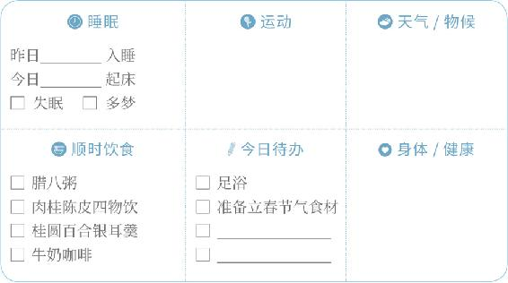
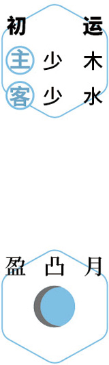
赏月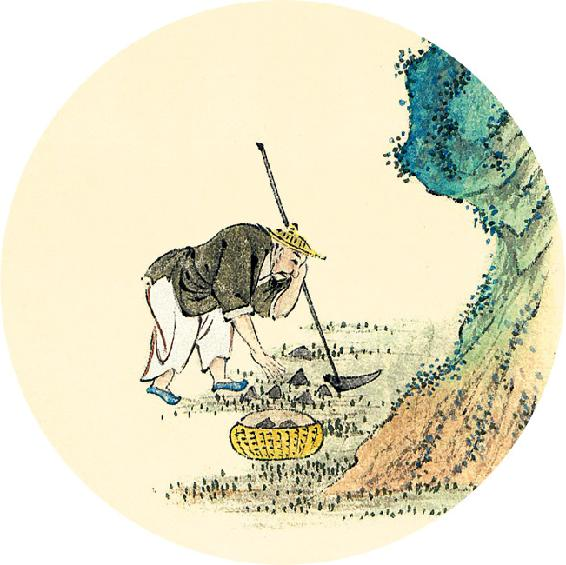
健康提示
辛丑岁“寒水之年”，养生重点是保养“肾系统”。全年要注意防湿气，特别是寒湿。否则，春夏易得传染病，冬季易生病。
今年容易出现的问题：传染病、腹胀、水肿、痛风、关节炎、脑卒中、发胖。
今年全年可比往年加量食用这些食物：肉桂、陈皮、茯苓、莲子、板栗、豆类、生姜、甘草、枸杞、蔓越莓、蒲公英根。
辛丑岁全年保健粥：莲杞顺时粥（见2月10日、11日）。
翻到4月28日看全年分阶段保健方汇总。
多食甘，则骨痛而发落。
——黄帝内经·素问·五脏生成论
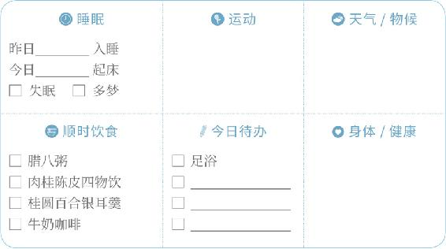
避寒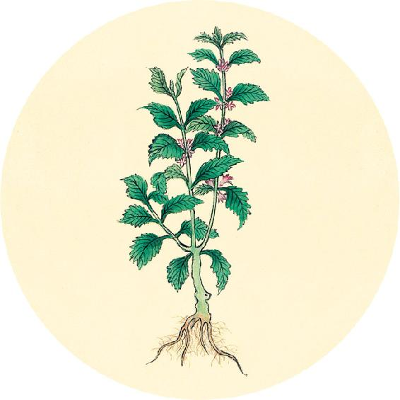
二候反思
自查下半身是否有寒湿：
小腿经常浮肿 □ 是 □ 否
尿频且小便颜色清 □ 是 □ 否
晚上总起夜 □ 是 □ 否
女性白带颜色白或清稀 □ 是 □ 否
女性宫寒 □ 是 □ 否
如有以上任一情况，今年要特别注意保养，防止生病。可以常吃肉桂、陈皮、茯苓。
【释义】吃多了甘味的东西，会使骨骼发生疼痛、头发脱落。
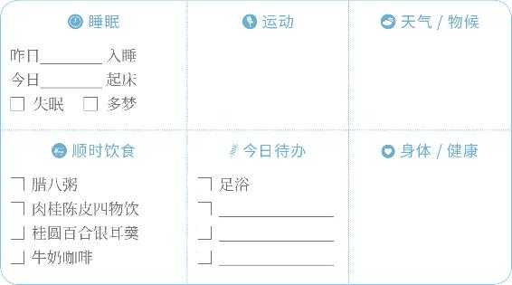
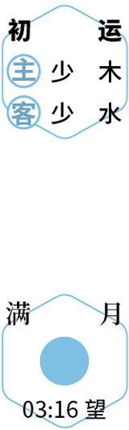
进补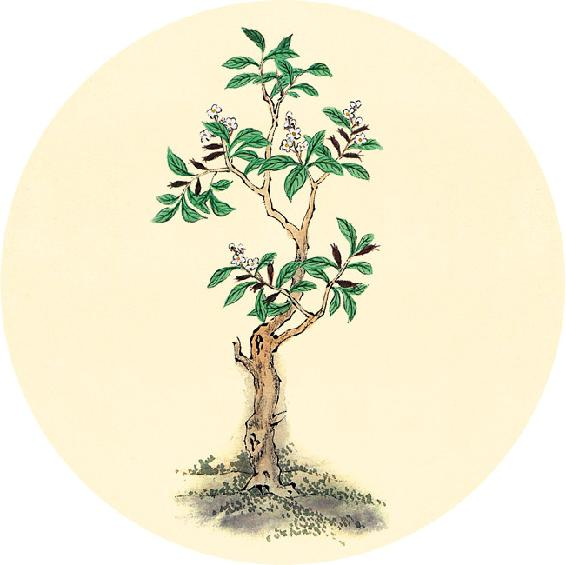
健康提示
从大寒开始，进入辛丑岁的第一个运气阶段：
初运，历时74天（1月20日9:00—4月3日10:01），
主运——少木；客运——少水。
初气，大寒、立春、雨水、惊蛰，
历时60天（1月20日9:00—3月20日5:00），
主气——风气；客气——风气。
辛丑岁初气阶段，养生以防风湿为主。
初气保健食方：肉桂陈皮四物饮（做法见3月12日）。
今年的全年保健粥食方在4月28日。
心欲苦，肺欲辛，肝欲酸，脾欲甘，肾欲咸，此五味之所合也。
——黄帝内经·素问·五脏生成论
居家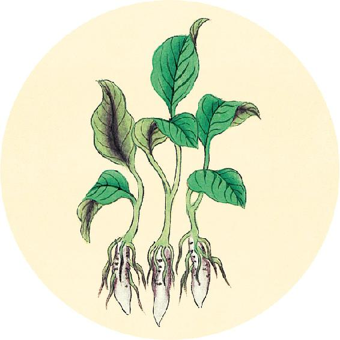
冬季回顾
6个节气中有________个节气坚持了节气饮食。
这个冬季的养生功课还做了（请打钩）：
⃞ 常吃银耳 ⃞ 墨鱼汤
⃞ 养藏汤 ⃞ 橘香梅子汤
⃞ 三九灸 ⃞ 泡脚
身体哪些方面有改善 ________________________________________
是否生过病 □ 是 □ 否（翻到7月16日，将病症归类记录）
我给自己的冬季养生功课打________分。
【释义】心欲得苦味，肺欲得辛味，肝欲得酸味，脾欲得甘味，肾欲得咸味，这是五味分别与五脏之气相合的对应关系。
居家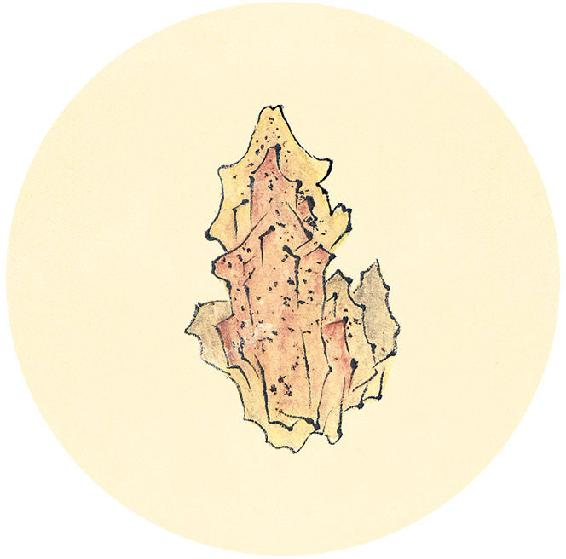
食材准备
后天进入立春节气。
1.春盘
原料：荠菜、葱叶、香菜、萝卜缨、芹菜、韭菜等辛味蔬菜任选5种。今年可以多准备荠菜和葱叶。
2.春饼：用面粉烙制或购买成品
3.绿豆：用于发绿豆芽（做法见2月8日）
4. 解酒消食的千杯不醉茶：川陈枳椇四物饮（做法见5月18日）
5.节气养生茶
原料：鱼腥草、陈皮。
6. 辛丑岁初气保健方：肉桂陈皮四物饮（从大寒吃到春分前日，做法见3月12日）
原料：肉桂、陈皮、柠檬、麦芽糖。
7. 辛丑岁全年保健粥：莲杞顺时粥（做法见2月11日）
原料：枸杞子、莲子、炒荷叶、川陈皮、茯苓、粥料。
色味当五脏：白当肺、辛，赤当心、苦，青当肝、酸，黄当脾、甘，黑当肾、咸。
——黄帝内经·素问·五脏生成论
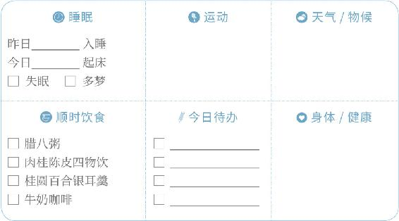
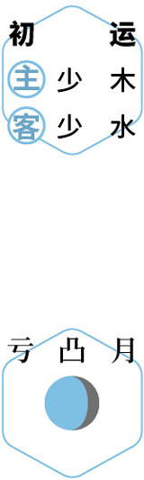
静养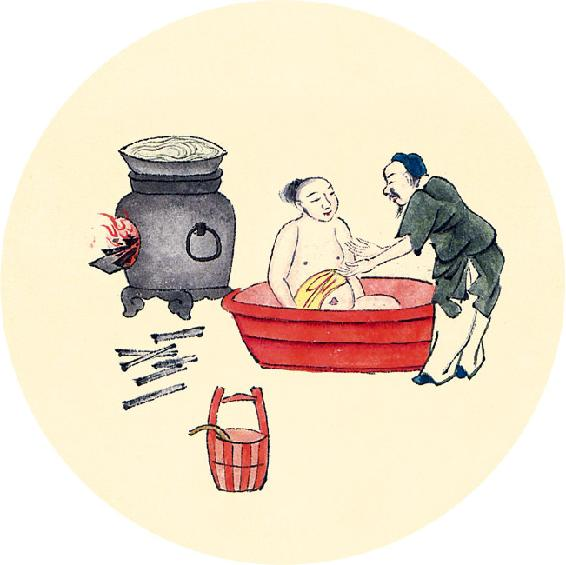
节气总结备
喝腊八粥的次数________
喝肉桂陈皮四物饮的次数________
喝桂圆百合银耳羹的次数________
喝莲杞顺时粥的次数________
泡脚的次数________
身体哪些方面有改善 ________________________________________
冬天的进补、保养做得好，春天就不容易得病。
【释义】五色五味内合于人体的五脏：白色内合于肺，配辛味；赤色内合于心，配苦味；青色内合于肝，配酸味；黄色内合于脾，配甘味；黑色内合于肾，配咸味。
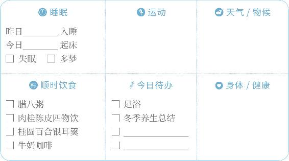
送冬